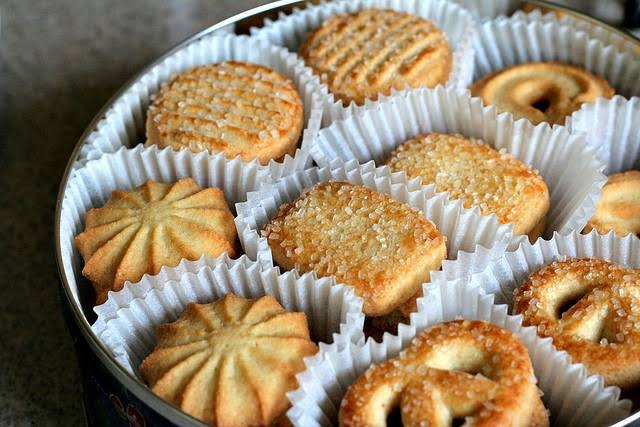

:max_bytes(150000):strip_icc():format(webp)/Beths-Spicy-Oatmeal-Raisin-Cookies-88688de1eba24eeba29f5e07e04f064d.jpg)
A seriously underrated cookie, oatmeal raisin is another type of drop cookie. Its dough is oatmeal based and contains raisins and brown sugar. They're warm and comforting — a reminder of simpler times and grandma's house.
A cookie is a baked or cooked snack or dessert that is typically small, flat and sweet. It usually contains flour, sugar, egg, and some type of oil, fat, or butter. It may include other ingredients such as raisins, oats, chocolate chips, nuts, etc.
|

Among the most popular of all cookie types, the chocolate chip cookie's invention was a happy accident. In 1930, Ruth Graves Wakefield, who ran the Toll House Inn in Whitman, Massachusetts, ran out of baker's chocolate and substituted for it with pieces of Nestle's® semi-sweet chocolate. The rest is history. Chocolate chip cookies are drop cookies that can be soft and doughy or crisp and crunchy depending on how long you cook them or what ingredients you use |
|
A seriously underrated cookie, oatmeal raisin is another type of drop cookie. Its dough is oatmeal based and contains raisins and brown sugar. They're warm and comforting — a reminder of simpler times and grandma's house. Popular Oatmeal Raisin Cookie Recipes |
To place your order,
click on this link